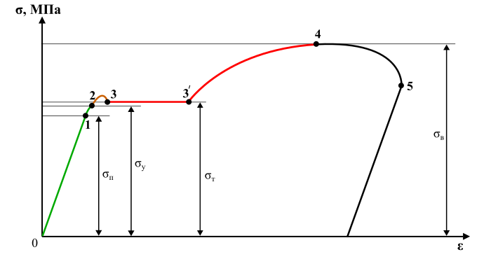
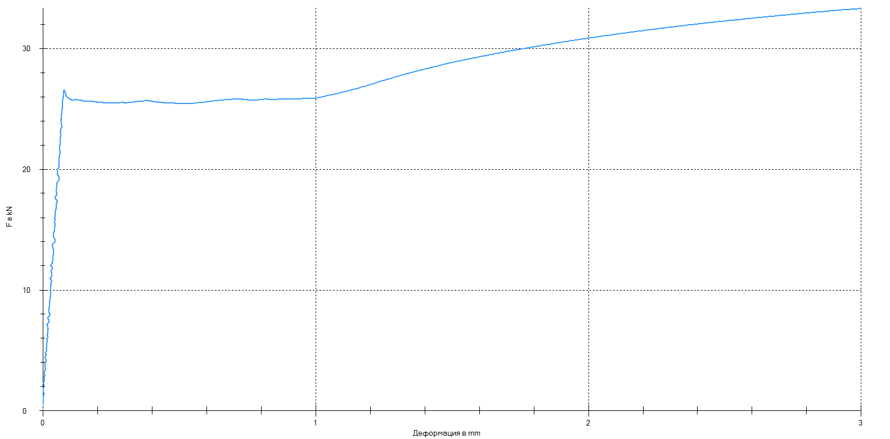
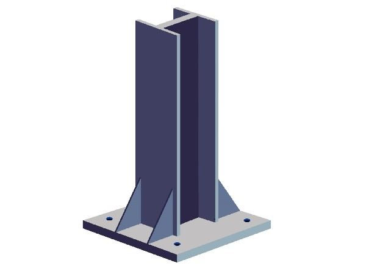
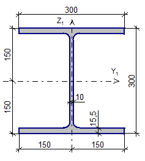
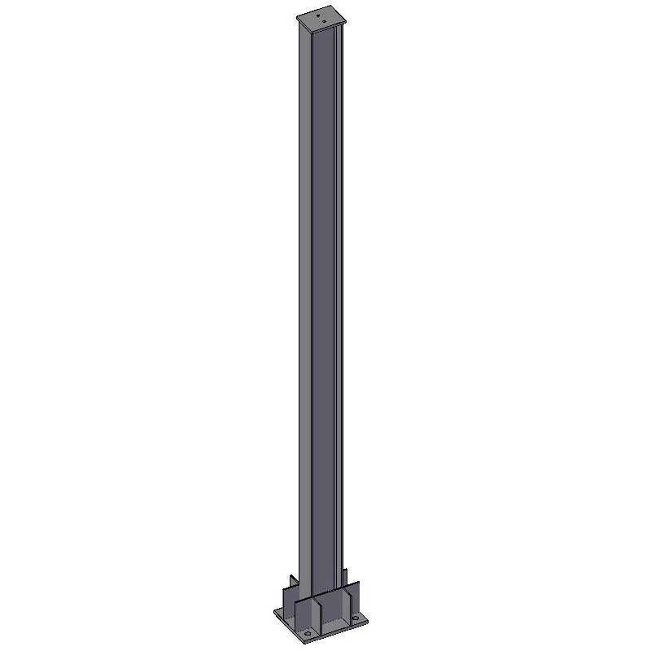
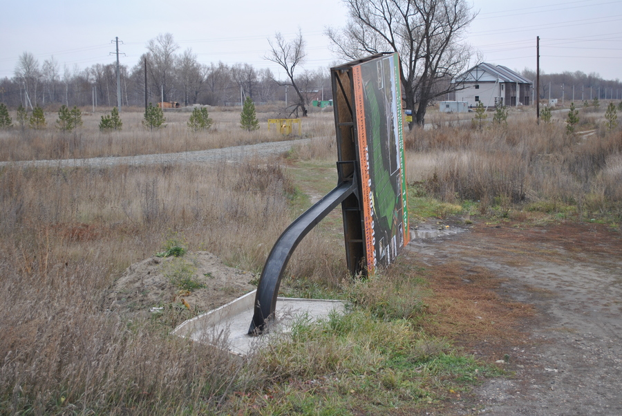
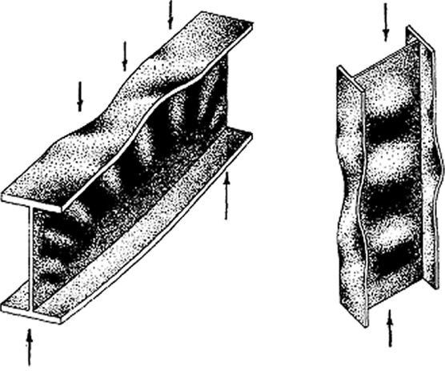
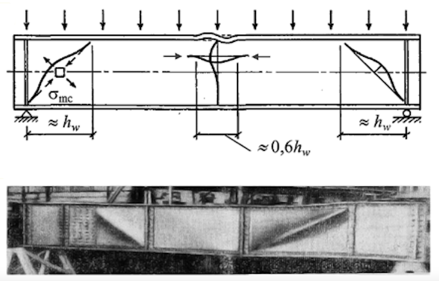
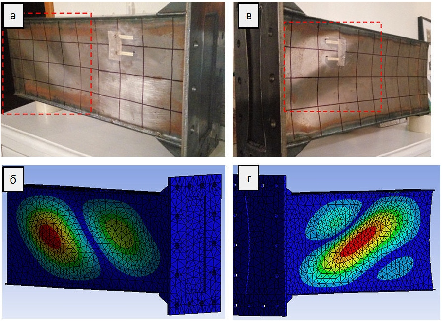

Первая группа предельных состояний
Расчёт по несущей способности: прочность, устойчивость и надёжность соединений
Эта группа касается непосредственно безопастности эксплуотации здания.
Это группа объединяющая ряд значений, при достижении которых в конструкции, случается полная жесть. Происходят необратимые геометрические изменения конструкции. Понимаете? НЕОБРАТИМЫЕ изменения в несущей конструкции. Это ж всё, это кабздец, беги, спасайся кто может!
Что относится к первой группе
- Разрушение материала — хрупкое, вязкое или усталостное.
- Потеря устойчивости формы сжатого элемента или положения конструкции.
Разрушение материала
Так как мы тут обсуждаем именно металлические конструкции, то нас интересует разрушение именно стали. Когда оно происходит? Помните этот график?

Это график зависимоти напряжений от деформаций для обычной стали типа Ст3, именно такие стали чаще всего используются в строительстве.
Значица, согласно ГОСТ 27772-2021 предельным напряжением для стали считается так называемый предел текучести, обозначается символом \(\sigma_{\text{т}}\), на графике это точка номер 3. При достижении напряжений в материале значения \(\sigma_{\text{т}}\) сталь начинает "течь", её геометрия сильно изменяется. Ну, вы понимаете, определенно ничего хорошего. Не стоит до этого доводить. Что означают остальные сигмы. \(\sigma_{\text{п}}\) - это предел пропорциональности, значит что сколько силы мы приложили к телу (какие напряжения мы вызвали в материале), настолько оно и деформировалось. Прпорционально. Понимаете? Напряжение \(\sigma_{\text{у}}\) - это прдел упругости, значит что пока напряжение в материале не достигло этого предела, материал ведёт себя упруго, то есть при снятии внешних усилий скукоженное тело раскукожится обратно и станет таким же как и было. После этого предела деформации становятся пластичными, невозвратными. После снятия усилий деформации останутся. Вмятины там, изгибы и т.д. Почему тогда предельно-допустимые напряжения это \(\sigma_{\text{т}}\), а не \(\sigma_{\text{у}}\)? Ведь необратимые изменения уже начались. А не знаю, наверное считается что они не очень большие, заметно меньше чем при текучести. Да и на самом деле попробуй определи эти \(\sigma_{\text{п}}\) и \(\sigma_{\text{у}}\). Вот смотрите на реальный график зависимости напряжений от деформации, полученный на разрывной машине.

Ну вот и где тут точка 1, а где точка 2? Честно говоря, я без понятия. А вот где материал "потёк" видно сразу. Ну как, "видно", вообще-то есть участок 2-3, этакий "горб", он мешает определить точное значение начала текучести. Потому на практике, используют точку 3', так как именно переход из текучести в пластичность реально хорошо видно.
Итак точка 3' - это 26 кН. На графике указаны приложенные усилия к стержню, так что надо их еще привести к напряжению. Площадь поперечного сечения стержня равна 100 мм². Чтобы миллиметры квадратные перевести в метры квадратные нужно умножить на 10-6.
Тогда \(\sigma_{\text{т}} = \frac{26 * 10^3 \text{Н}}{100 * 10^{-6} \text{м}^2} = 260 * 10^{6} \text{Н/м}^2 = 260 \text{МПа} \). Теперь можно зайти в ГОСТ 27772-2021 «ПРОКАТ ДЛЯ СТРОИТЕЛЬНЫХ СТАЛЬНЫХ КОНСТРУКЦИЙ» и прикинуть что у нас за сталь была в опыте.
Остался последний символ - \(\sigma_{\text{в}}\). А это временное сопротивление. Ну так оно называется в ГОСТе. При достижении этого напряжения происходит уже окончательное разрушение.
В СТОРОНУ ТЕОРИЮ! как на счет ПРИМЕРа?

Вот есть такая колонна (Рис. 3) с сечением в форме двутавра, конкретно "Двутавр колонный 30К2" (Рис. 4). Сделана колонна из стали С245.

И сверху на неё давит в центр тяжести сечение сосредоточенная нормативная нагрузка в 120 тонн. Давайте переведём нагрузку к килоньютонам. Чтобы перевести тонны в килоньютоны, надо умножить на 10, получится 1200 кН.
Чтобы понять не разрушится ли эта колонна под этой нагрузкой нужно определить напряжения, которые в ней возникают. Вообще говоря определение напряжений в каком-то теле, в каком-то сечении задача нетривиальная. Но в простейших случаях, типа приведенного выше, достаточно просто поделить нагрузку на площадь сечения. Площадь сечения конкретного двутавра мы можем взять из сортамента двутавров по ГОСТ 35087-2024, она равна 119.78 см². Ну что, делим силу на площадь? А неет, не спешите. Обратите внимание на то какая конкретно действует нагрузка - нормативная. А расчеты по первой группе предельных состояний следует проводить от расчетных нагрузок. Расчетные нагрузки - это нагрузки взятые с запасом. Запас никогда не помешает. Может мы нагрузку не совсем правильно оценили, а может её при эксплуатации превысят, а может швы не проварят до конца. Да и что бы нагрузка прям точно попадала в центр тяжести, это чудо какое-то должно случиться. По любому будет какой-то эксцентриситет. Короче лучше перебдеть и посчитать с запасом. Чтобы получить расчетную нагрузку из нормативной, надо последнюю умножить на коэффициент запаса. Величину этих коэффициентов регламентирует СП 20.13330.2016 «Нагрузки и воздействия». В нашем случае коэффициент будет равен 1.2. Тогда расчетная нагрузка равна 1200 кН * 1.2 = 1440 кН.
Теперь нам нужен СП 16.13330.2017 «Стальные конструкции». А нем указываются формулы по которым стоит считать. Мейчас нам нужен глаоа 7, формула 5:
Что ещё за расчётное сопротивление? Очевидно, что оно получается из нормативного. Ну ок, а что за нормативное сопротивление? А это и есть предел текучести стали \(\sigma_{\text{т}}\). просто в СП 16.13330 обозначение другое, пояснение располагается в приложении Б этого СП, там же есть и таблица В.3, по которой можно установить конкретный \(R_y\), для нашей стали С245 он равен 240 МПа.
Коэффициент условий работы \(\gamma_c\) в основном равен 1, но для уточнения для конкретного элемента конструкции стоит изучить раздел 4.3 СП 16.13330.
Так как \( \frac{N}{A_n} = \sigma \) то условие прочности можно переписать так:
Короче находим \(\sigma\), делим наши расчетные нагрузки на прощадь сечение колонны. \( \frac{N}{A_n} = \frac{1440 * 10^3 \text{Н}}{119.78 * 10^{-4}\text{м}^2} = 12 * 10^{7} \frac{\text{Н}}{\text{м}^2} = 120 \text{МПа}. \)
Ну и как бы легко видеть что напряжение в нашей колонне (120 МПа) в 2 раз меньше предельно допустимых (240 МПа).
Ну всё, дело в шляпе, это колонна сто лет простоит и ничто её не сломает? А как бы не так, это было бы слишком просто, реальность - штука позабористей. Дело в том что на Рис.3 изображена ну очень уж короткая колонна. Обычно они всё таки несколько подлиннее, как на Рис.5

А длинные и тонкие объекты являются гибкими, то есть легко гнутся. И если они испытывают сжатие от нагрузки, которая, конечно же, не приложена точнёхонько в центр тяжести сечения, да и колонна вряд ли идеально ровная, то всегда возникает какой-то изгибающий момент. Да, он маленький, но элемент-то гибкий, его легко погнуть. Причем такой изгиб будет очень быстрый, мгновенный, бам - и всё. Это называется потеря устойчивости сжатого элемента. Надо как-то проверить, не теряет ли устойчивость наша колонна. Для этого круто было бы найти этот самый крохотный паразитный изгибающий момент. Но это анрил. Он же случайный. Потому существуют некоторые оценочные формулы, позволяющие прикинуть, не высока ли вероятность такого обрушения. Такая формула из СП 16.13330 для центрально сжатого сплошного сечения указана там же в главе 7. Вот она:
Честно говоря разница не очень большая в сравнении с предыдущей, только лишь на коэффициент \(\varphi\). Определяется он по таблице из СП 16.13330.2017, приложение Д, но нужно знать гибкость стержня:
$$\lambda = \frac{l_{ef}}{i_y} \qquad \bar\lambda = \lambda \sqrt{\frac{R_y}{E}}$$Предположем что высота нашей колонны 10 метров, а крепится она и с низу и с верху шарнирно, тогда $l_{ef} = 10 м$. Радиус инерции $i_y$ берем всё из того же сортамента двутавров по ГОСТ 35087-2024, $i_y=75.1 мм$.
$$\lambda = \frac{10}{75.1 * 10^{-3}} = 133, \qquad \bar\lambda = 133 \sqrt{\frac{240 * 10^6 Па}{200 * 10^{9} Па}} = 4.6$$По таблице для $\bar\lambda = 4.6$ соответствует \(\varphi=0.36\) и получается условие:
И что мы теперь видим? А то что предельные напряжения чуть ли не в три раза уменьшились и получилось:
$$120 МПа \le 0.36 \cdot 240 МПа $$ $$120 МПа \xcancel{\le} 86.4 МПа $$Вот такая фигня малята, не устаит наша колонна под нагрузкой.

Будте внимательны, не допускайте уныния!
А помимо потери устойчивости стержня целиком, так же её могут потерять отдельные элементы как колон, так и балок.



По этому их тоже надо отдельно проверять. А ещё надо проверять соединения: сварные и болтовые, их тоже может сорвать.
Далее ещё раз и более формальным языком.
Что относится к первой группе
- Разрушение материала — хрупкое, вязкое или усталостное.
- Потеря устойчивости формы сжатого элемента или положения конструкции.
- Возникновение чрезмерных пластических деформаций.
- Разрушение сварных и болтовых соединений.
- Потеря несущей способности основания фундамента.
Какие нагрузки используют
- Расчётные нагрузки: \(q = \sum \gamma_{f,i}\, q_{n,i}\), где \(\gamma_f > 1\).
- Основные и особые сочетания с коэффициентами сочетаний \(\psi\).
- Собственный вес конструкций, оборудования и полезные нагрузки.
- Снеговые, ветровые и другие воздействия по СП 20.13330.2017.
Проверки элементов балочной клетки
Настил и изгибаемые балки
Для изгибаемого элемента проверяют прочность по нормальным и касательным напряжениям. Расчёт ведут по расчётному сопротивлению стали с учётом коэффициента условий работы.
Нормативные значения предела текучести и временного сопротивления по классам прочности собраны в справочной таблице механических характеристик стали.
Сжатая колонна
Для колонны недостаточно проверить только прочность. Гибкий сжатый элемент может потерять устойчивость при напряжениях ниже расчётного сопротивления, поэтому обязательно выполняют проверку по коэффициенту продольного изгиба \(\varphi\).
Сварные и болтовые соединения
Соединения рассчитывают на те же расчётные усилия, что и основной элемент. Для сварного шва проверяют прочность по металлу шва и по металлу границы сплавления, для болтового — срез, смятие и растяжение болта. Отдельно проверяют несущую способность основания под опорной плитой.
Частые ошибки
- Проверяют только прочность и забывают об устойчивости сжатой колонны.
- Используют нормативные нагрузки вместо расчётных — проверка получается недонапряжённой.
- Берут момент сопротивления брутто там, где сечение ослаблено отверстиями.
- Не учитывают собственный вес настила, балок и колонн.
- Считают соединение на меньшее усилие, чем основной элемент.
- Не проверяют местную устойчивость стенки и полки составной балки.
Дальше — вторая группа
Первая группа отвечает за безопасность, вторая — за нормальную эксплуатацию: прогибы, перемещения и колебания.